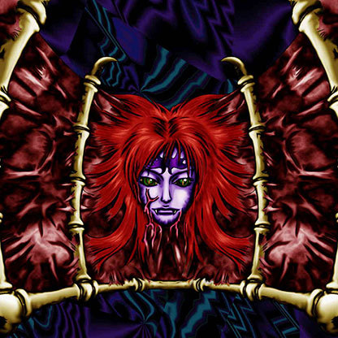

Wall of Illusion

Description: "Returns enemy monster to opponent's deck for re-shuffling when this card is flipped face-up in battle."
STATS
ATK: 1000
DEF: 1850DECK COST
Deck Cost per Card: 34EFFECT NOT IMPLEMENTED
Fusion List (3 Possible Fusions)
- Wall of Illusion + Baby Dragon = Koumori Dragon
- Wall of Illusion + Dark Rabbit = Chimera the Flying Mythical Beast
- Wall of Illusion + Mystic Lamp = La Jinn the Mystical Genie of the Lamp